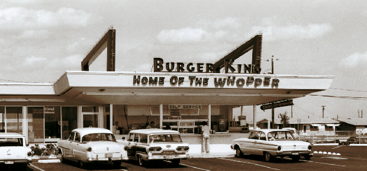
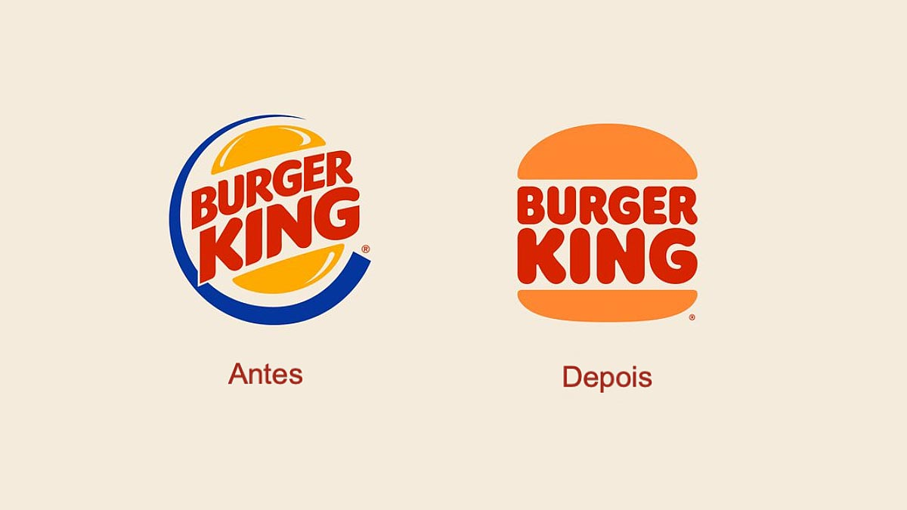

O Burger King foi fundado em 1954. O primeiro restaurante foi aberto em Miami, Flórida, Estados Unidos, por James McLamore e David Edgerton. Desde então, o Burger King cresceu para se tornar uma das maiores cadeias de fast food do mundo, conhecida por seus hambúrgueres flamejantes e seu logotipo característico.
Em termos de alcance mundial e presença, o Burger King é uma das maiores cadeias de fast-food do mundo. Ele possui milhares de restaurantes em mais de 100 países ao redor do mundo. A empresa está em constante expansão e continua a abrir novas unidades em diferentes partes do mundo.
